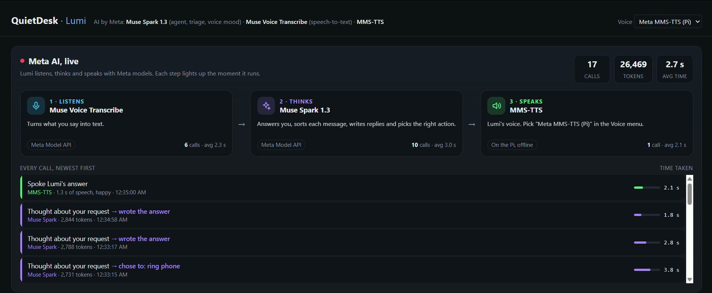

A Raspberry Pi desk companion that keeps your phone out of reach during focused work, without missing anything important. You talk to Lumi; Meta AI models listen, think and speak.
Built by Nayanjyoti Das and Mintu Gogoi. A live project on real hardware: a Raspberry Pi 5, an OLED screen, a button and two LEDs, connected to a real Android phone.
About 2.5 minutes: a focus session, an urgent message from Mom, a reply by voice (sent only after a yes), finding the phone, and the live Meta AI panel.
Meta AI, live
Every AI model QuietDesk calls is a Meta model, and it calls no other AI model, local or cloud. The QuietDesk window shows each call the moment it runs: which model, what it did, how long it took and how many tokens it used.

The panel during our demo session on Nov 5, 2026: 17 Meta model calls, 26,469 tokens. The newest calls are at the top: Muse Spark choosing to ring the phone and writing answers, and MMS-TTS speaking an answer on the Pi.
1 · Listens
Muse Voice Transcribe
Meta Model API · pi/voice.py
Turns what you say into text while you hold the button on the desk.
Push to talk, English
Knows the words "Lumi" and "QuietDesk"
Example
Inyour voice, about 2 secondsOut"Start a 25 minute focus session"
2 · Thinks
Muse Spark 1.3
Meta Model API · pi/agent.pypi/triage.py
Lumi's brain. Answers you and picks the right action with tool calling.
Sorts each phone message: urgent now, or saved for later
Drafts replies and "busy" auto-replies
Rings the phone, plays focus sounds, controls music
Picks the mood of each reply
Example
In"Where's my phone?"Outchose to: ring phone
3 · Speaks
MMS-TTS
On the Raspberry Pi, offline · pi/tts.py
Lumi's voice. Meta's open-source speech model, running on the Pi itself.
No internet needed for the voice
Four moods: happy, calm, serious, neutral
Example
InLumi's reply + mood "happy"Out1.3 s of speech, made in 2.1 s
How it works
The phone stays across the room. The Pi on the desk does the rest.
A message arrives. The phone's notification reaches the Pi over Wi-Fi through KDE Connect. Only messaging apps go further, and anything that looks like an OTP or password is dropped first.
Muse Spark sorts it. Urgent now, or saved for the digest, with a short reason and a reply draft. Urgent messages light up the desk right away.
You hold the button and talk. Muse Voice Transcribe turns your voice into text.
Lumi decides what to do. Muse Spark answers or picks a tool: start focus, read missed messages, draft a reply, ring the phone, play focus sounds, set a reminder.
Lumi speaks. MMS-TTS runs offline on the Pi, in the mood Muse Spark picked.
Replies need your yes. Lumi reads the draft aloud and asks. Only a clear yes in your next turn sends it, from your phone's own quick reply.
Safety
Nothing is sent without your yes
The check is in code (pi/agent.py), not left to the model: the draft must have been read out in the previous reply, your answer must contain a yes and no "no", and a draft is never sent in the turn it was written.
Careful with your data
Only messaging apps reach the model, OTP and password messages never do, auto-replies are marked as auto-replies, and the web console only listens on the Pi itself.
What we built this week
All code was written during the hackathon (it started Oct 26; our first commit is Oct 30, 2026).
Built during the hackathon
Lumi, the agent on Muse Spark with tool calling
Notification sorting and reply drafts
The "yes" safety check, in code
Focus sessions, auto-replies, digest and focus score
The desk device: button, LEDs, OLED and Lumi's animated screens
Phone integration through KDE Connect
The QuietDesk window and the live Meta AI panel
Used, not built by us
Meta AI models: Muse Spark, Muse Voice Transcribe, MMS-TTS
Off-the-shelf hardware: Raspberry Pi 5, Waveshare 1.5" OLED, a button, LEDs, a breadboard
Open-source software: KDE Connect, PyTorch, transformers, Pillow, luma.oled, gpiozero and others (full list in the README)